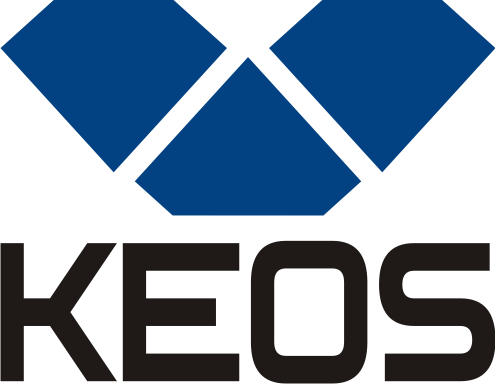

Видео

MITEX 2026 · Россия · Стенд 7А15
KEOS
Карточка проверена 10 ноября 2026, 09:28 · Источник ↗ · Снимок оригинальной карточки ↗
О компании
KEOS - бренд профессионального алмазного инструмента и оборудования для строительных, монтажных, инженерных и отделочных работ. Компания поставляет комплексные решения для алмазного бурения, сверления, резки и шлифовки твёрдых строительных материалов: бетона и железобетона, кирпича, камня, керамогранита и плитки. Продукция • Установки алмазного бурения, дрели и двигатели, стойки и аксессуары. • Алмазные коронки для сухого и мокрого бурения бетона, железобетона, кирпича и керамогранита. • Алмазные диски для резки бетона, камня, плитки и асфальта; шлифовальные чашки. • Оснастка, комплектующие и расходные материалы для алмазного бурения. • Решения для работы с водой, пылью и креплением оборудования. Сервис и поддержка • Консультации по подбору инструмента под материал и задачу. • Диагностика и ремонт оборудования. • Техническая поддержка после продажи. KEOS предлагает не отдельный товар, а рабочее решение: оборудование + инструмент + расходники + сервис.
Контакты
Все контактные сведения из карточки
Контакты Веб-сайт: https://keos.pro/ E-mail: zakaz@keos.pro Телефон: 8 800 333-51-22
Все рубрики участника
Mitex - Рубрикатор
- 1. Электроинструмент и расходные материалы
- 10. Алмазный, твердосплавный инструмент и оснастка
Зал
- Зал № 7
Участник выставки
- MITEX